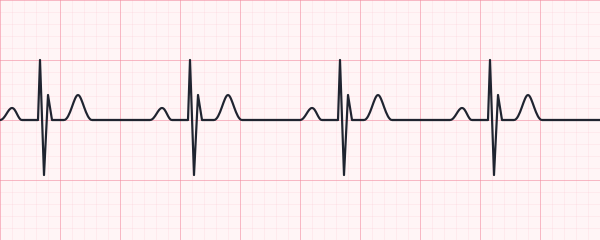

Placeholder ECG strip - replace with a real strip image.
Question
The rhythm strip shown demonstrates a sawtooth baseline pattern between QRS complexes. What rhythm is this classically associated with?
Level 2 Progress

Placeholder ECG strip - replace with a real strip image.
The rhythm strip shown demonstrates a sawtooth baseline pattern between QRS complexes. What rhythm is this classically associated with?